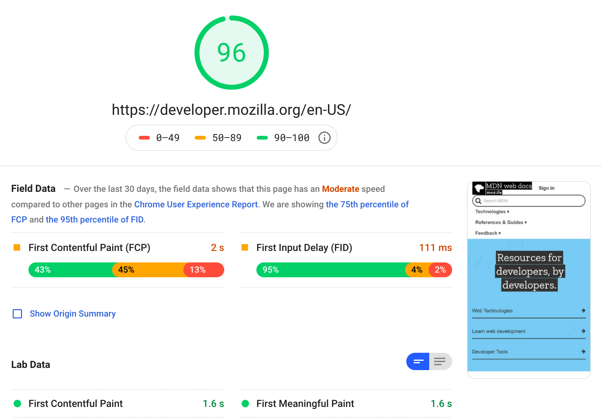
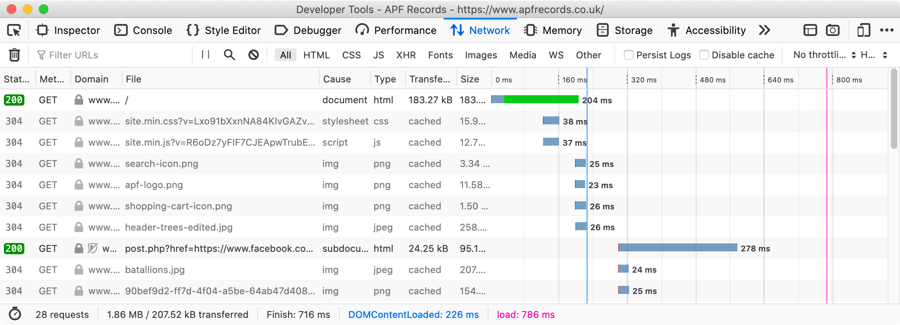

| Prerequisites: | Basic computer literacy, basic software installed, and basic knowledge of client-side web technologies. |
|---|---|
| Objective: |
To provide information about web performance metrics that you can collect through various web performance APIs and tools that you can use to visualize that data. |
When writing code for the Web, there are a large number of Web APIs available that allow you to create your own performance measuring tools.
You can use the Navigation Timing API to measure client-side web performance; including the amount of time needed to unload the previous page, how long domain lookups take, the total time spent executing the window's load handler, and more. You can use the API for metrics related to all of the navigation events displayed in the diagram below.
The Performance API, which provides access to performance-related information for the current page, includes the Performance Timeline API, the Navigation Timing API, the User Timing API, and the Resource Timing API. These interfaces allows the accurate measurement of the time it takes for JavaScript tasks to complete.
The PerformanceEntry object is part of the performance timeline. A performance entry can be directly created by making a performance {{domxref("PerformanceMark","mark")}} or {{domxref("PerformanceMeasure","measure")}} (for example by calling the {{domxref("Performance.mark","mark()")}} method) at an explicit point in an application. Performance entries are also created in indirect ways; such as loading a resource, like an image.
The PerformanceObserver API can be used to observe performance measurement events and it can notify you of new performance entries as they are recorded in the browser's performance timeline.
While this article does not dive into using these APIs, it is useful to know they exist. You can also refer to the Navigation and timings article for further examples on using performance Web APIs.
There are a number of different tools available to help you improve performance. These can generally be classified into two categories:
We'll talk about both categories in this course. And as well as talking about performance metrics we will of course talk about the metrics that you'll use to measure whether your site's performance is improving.
Tools like PageSpeed Insights can measure a website’s performance. You can enter a URL and get a performance report in seconds. The report contains scores about how your website is performing, both for mobile and desktop. This is a good start for getting an idea about what you are already doing well and what could be improved.
At the time of writing, MDN's performance report summary looks similar to the following:

A performance report contains information about things like how long a user has to wait before anything is displayed on the page, how many bytes need to be downloaded to display a page, and much more. It also lets you know it the measured values are considered good or bad.
webpagetest.org is another example of a tool that automatically tests your site and returns useful metrics.
Try running your favorite website now, on both webpagetest.org and PageSpeed Insights, and see what the scores are.
Most browsers have tools available that you can use to run against loaded pages and determine how they are performing. For example, the Firefox Network Monitor returns detailed information on all the assets downloaded form the network, along with a time graph that shows how long each one took to download.

You can also use the Performance Monitor to measure the performance of a web app or site's user interface as you perform different actions. This indicates the features that might be slowing down your web app or site.
This article provided a brief overview of the web performance metrics to help introduce you to what you can measure on a web app or site. Next up, you'll look at perceived performance and some techniques to make unavoidable performance hits appear less severe to the user, or disguise them completely.
{{PreviousMenuNext("Learn/Performance/Perceived_performance", "Learn/Performance/Multimedia", "Learn/Performance")}}